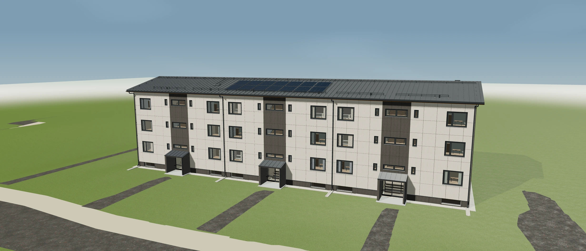
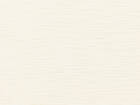
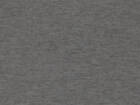
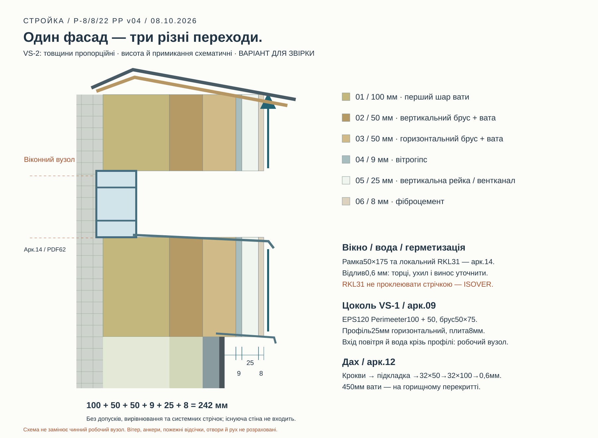

01 / ARHITEKTUUR
Mäe tn 7.
Rekonstrueerimine avaliku projekti põhjal.
40,4 m · 3 korrust
Laadime mudelit…
3D avamine ebaõnnestus
Proovi stseeni uuesti laadida.

Rekonstrueerimine avaliku projekti põhjal.
Proovi stseeni uuesti laadida.
Akende asukohad pärinevad lehe 05 vektorjoonisest. Tüüpide mõõdud on spetsifikatsioonist. Objekti mõõte ja kehtivat tööprojekti veel kontrollitakse.
1192×1250 mm on Arturi täpsustatud valmis plaadi mõõt. Detaili ja lehe kõrgust saab võrrelda eraldi. Saetee ja servavaru on eeldused. Tekstuuri pööramine on keelatud; värve arvestatakse eraldi.
Konsoolid kannavad koormust, puitprussid moodustavad pesad ja roovid toetavad plaate. Villa laius aitab valida konstruktiivselt lubatud lahenduste seast säästliku variandi.
ISOVER STANDARD35 näide: 565 mm puitkarkassi sammule 600; tootja järgi varu 10–15 mm. Objektil kasutatavat toodet ei ole veel kinnitatud. Allikas ↗
Fassaadi normatiivne omakaal 0,5 kN/m² — §5.5. Tuulekoormus ja plokkaluse tugevus pole määratud; ankrute sammu mudel ei määra.
Mahutabel v02, leht Hanketabel. Projekti maht; varu ei lisata ega tööd loeta vastuvõetuks automaatselt.
| Töö | Kogus | Allikas |
|---|
P222 ja P070 on muutmata Swisspearli digitaalsed näidised. RR23 on Ruukki kataloogi näidis. Välimus sõltub valgusest ja ekraanist; tarnitud partiid veel kontrollitakse.


| Element / allikas | Projekti parameetrid | Välimus mudelis |
|---|---|---|
| KatuseplekkPDF 19, 53, 60 | Classic / PURAL / RR23 · 0,6 mm; 32/475 mm on üksnes Ruukki EE võrdlusprofiil | Tootja digitaalne RR23 näidis; läige, karedus ja peegeldused on näitlikud |
| Katuse aluskatePDF 19, 60 | Tootekood puudub · mõõt sõlme järgi; tuulutusliist 32×50; roov 32×100 mm | Näitlik tume pind; 0,2 mm on visualiseerimise paksus |
| Aluskonstruktsiooni puitPDF 19, 21, 57 | H3; räästalaudisel Bs1,d0 · mõõt sõlme järgi; fassaad 50×50 ja 25×100; katus 32×50 ja 32×100; sokkel 50×75; räästalaudis 22×100 mm | Näitlik puidutekstuur; puuliik ja partii värv on teadmata |
| KiudtsementplaadidPDF 21, 53 | P222 / P070 · 8 mm; | Praeguse tootja digitaalsed näidised; tarnitud partiid pole mõõdetud |
| Fassaadi mineraalvillPDF 21, 29 | λ≤0,035 W/(m·K) · 200 mm; 100+50+50 mm; vähemalt 200 mm | Näitlikud kiud; digitaalse pinna värv ja tihedus ei kinnita toote omadusi |
| Pööningu vahelae soojustusPDF 19, 20, 29, 60 | PP-1; λ≤0,041; klass A · 450 mm; vana 250 mm eemaldatakse; soojustatakse horisontaalne vahelagi | Näitlik kiuline kiht; kõiki katusekaldeid ei soojustata |
| TuuletõkkekipsplaatPDF 21, 56 | Tootekood puudub · 9 mm; teibitud vuugid | Näitlik pind; praegune Gyproc GTS9 on 9,5 mm ja pole täpne asendus |
| Kaitseteip kiudtsemendi allPDF 21 | Tootekood puudub · mõõt sõlme järgi; 100 mm laius ja 2 mm paksus on digitaalse mudeli eeldused, mitte projekti mõõdud | Näitlik must kumm; suurendamine 90→100 ei kinnita paarislaudade sõlme |
| Aknaplekid ja metallraamistusedPDF 23, 53 | PURAL / RR23 · 0,6 mm; väljaulatus 30 mm; rõdude juures 10 mm; kalle ≥1:10 | Digitaalne RR23; läige ja painutused on näitlikud |
| Uued PVC-aknad ja klaaspaketidPDF 23, 73, 74 | PVC; läbipaistev kolmekordne klaaspakett; keraamiline vaheliist · mõõt sõlme järgi; väljast tumehall, seest valge; U≤0,9/1,1 tüübi järgi | Värviperekond vastab projektile; RGB, IOR, valgusläbivus ja karedus on näitlikud |
| VälisuksedPDF 24, 53, 75 | VU01; soojustatud alumiinium / RR23; läbipaistev karastatud klaas · mõõt sõlme järgi; U≤1,4; mudeli 12 mm klaas on näitlik | Digitaalne RR23 ja näitlik optika; tellitud klaaspaketti ei ole määratud |
| Tuulekoja katusekatePDF 25, 53, 68 | SBS ↔ Classic / PURAL · mõõt sõlme järgi; Classic-sõlmes 0,6 mm plekk ning 32×50 ja 32×100 mm puit | Kujutatud Classic on mudeli valik; dokumentide vastuolu ei ole kooskõlastatult lahendatud |
| Rõdude terasPDF 26, 53 | S355JR / C3 / RR23 · mõõt sõlme järgi; 100×100×5; 100×50×5; 50×50×5; L50×50×5; piire 40×40×3 ja 40×80×3 mm | Digitaalne RR23; värvitekstuur ja teravad servad on näitlikud |
| Sissepääsu varikatuse terasPDF 25 | S355JR / C3 / kuumtsinkimine · mõõt sõlme järgi; RHS 100×80×5 mm | Näitlik tsink; tegelik muster ja vananemine on teadmata |
| RõduklaasPDF 26 | Läbipaistev karastatud; ülemine hall karastatud lamineeritud klaas · [6] mm; ülemine 4+4 mm; vahekiht on teadmata | IOR, valgusläbivus, toon ja peegeldused on näitlikud |
| RõdupõrandPDF 26, 65 | Tsementlaastplaat; libisemiskindel PU või analoog · 24 mm; kumm 1,5×50; PURAL 0,6 mm; kalle ≥1:80; ülespööre ≥100 mm | Näitlik pind; 1 mm viimistlus ja kihtide järjekord vajavad kinnitamist |
| Sokli soojustus ja profiilidPDF 18, 28, 57 | EPS; näide EPS120 Perimeeter; MP25/38 või analoog · 150 mm; 100+50 mm; λ≤0,035; 120 kPa; puit 50×75; profiil 25 mm; FC8 P070 | Näitlik EPS ja tsink; kiudtsemendi värv on digitaalne näidis |
| Säilitatavad keldriaknadPDF 23, 63 | Tootekood puudub · mõõt sõlme järgi; uued 0,6 mm PURAL-aknaplekid; sõlmes puit 75×30; RKL31 30 mm või analoog | Valge raam ja läbipaistev pind on olemasoleva akna näitlik kujutis |
| Kinnitused ja konsoolidPDF 21, 57 | C3; konsoolidel ja kübarprofiilil tsink ≥275 g/m² · mõõt sõlme järgi; L150×150×60×2,5 mm; vähemalt 5 väljatõmbekatset | Ruumilised kruvid olemasolevate 8 mm avade telgedel. Kruvitoode ja kinnituslahendus ei ole veel kooskõlastatud. |
| Betoonist sillutusribaPDF 18 | C30/37 / XC4+XF3 / B500 · mõõt sõlme järgi; laius 600 mm; kalle ≥2%; killustik 200 mm 0–32; võrk Ø6@150×150 mm | Näitlik betoonpind; tegelikku segu pole skannitud |
Katus: pööningu vahelael 450 mm puistevilla; kaldpindadel aluskate, tuulutusliistud, roovid ja kate. Sissepääsude kohal on dokumentides SBS / Classic vastuolu; kujutatud Classic-sõlm vajab projekteerija vastust.
VS-2 paksused on proportsionaalsed. Kõrgusüleminekud on skeemsed; avasid, ankruid ja liikumissõlmi see lõige ei määra.

ISOVER keelab RKL31 teipimise: teip võib lahti tulla ja kanali sulgeda. See erineb 9 mm tuuletõkkekipsist, millele kasutatakse sobivat tihendussüsteemi. RKL31 juhend ↗
Cycles · näitlik valgustus. Värve võrreldakse materjalinäidistega.
Vastused ja kehtiva versiooni saab brigaad ettevõttelt või vastutavalt projekteerijalt. Praegused mudelivariandid ei asenda kooskõlastatud sõlmi.